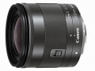

器材库 > APS画幅镜头 > EF-M 11-22/4-5.6 IS STM

详细规格
镜头类型
超广角变焦镜头
发布日期
2013-06-06
厂家推荐价格
52,500.00 （日元）
焦距
11mm-22mm
等效35mm画幅焦距
18mm-35mm
最大光圈
f/4.0-f/5.6
最小光圈
f/22-f/32
视角（对角）
91.83°～54.5°
视角（水平）
68.92°～37.83°
视角（垂直）
102.17°～63.5°
镜头结构
12片/9组
非球面镜片
2片
光圈叶片
7片
最近对焦距离
15cm
最大放大倍率
0.3倍
驱动马达
STM
滤镜口径
55mm
镜头卡口
Canon EF-M
防抖
是
颜色
黑色
尺寸
60.9×58.2mm
重量
220g
fengq1002014-09-14 15:144.33 分
操作性 4.50耐用性 4.50性价比 4.50解像力 4.00色彩还原 4.00机械结构 4.50
fengq1002014-09-14 15:05
fengq1002014-09-14 15:03
光影留痕2014-07-14 11:304.75 分
操作性 4.50耐用性 4.50性价比 5.00解像力 5.00色彩还原 5.00机械结构 4.50
UVfilter2014-05-24 13:144.5 分
操作性 4.50耐用性 4.50性价比 5.00解像力 4.00色彩还原 4.50机械结构 4.50
piratepp2014-03-04 12:044.42 分
操作性 4.50耐用性 4.50性价比 5.00解像力 4.00色彩还原 4.00机械结构 4.50
逸景2013-08-06 21:554.5 分
操作性 4.50耐用性 4.50性价比 4.50解像力 4.50色彩还原 4.50机械结构 4.50
光影留痕2013-07-24 12:08